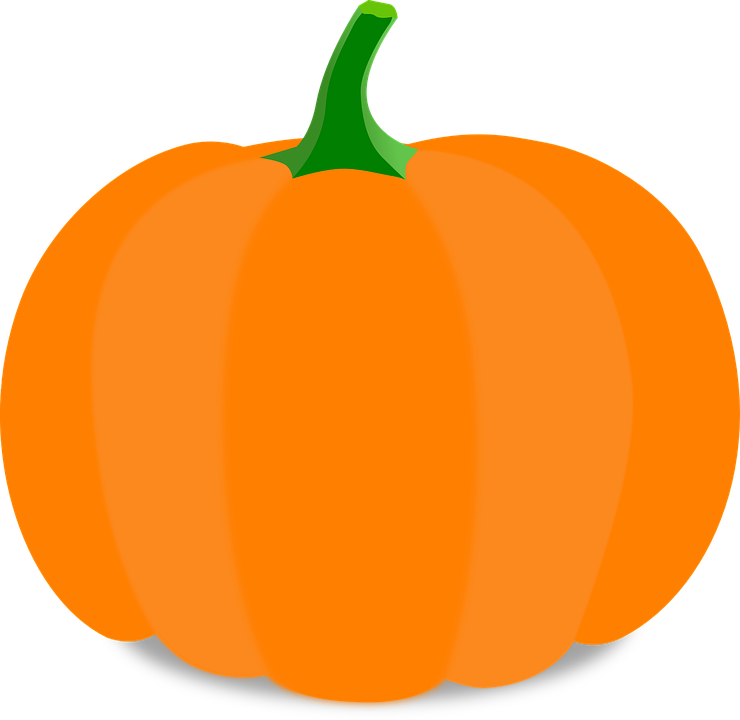

Welcome to the Pumpkin Carver,
where you can carve a mess-free pumpkin to print out a stencil for your real pumpkin!
Developed by Kevin Skocypec and Sean Conway
Start
Save as Stencil
Draw Yellow Glow
Sketch in Black
Circle Brush
Draw Line
Draw Square
Draw Circle
Line Size
5
